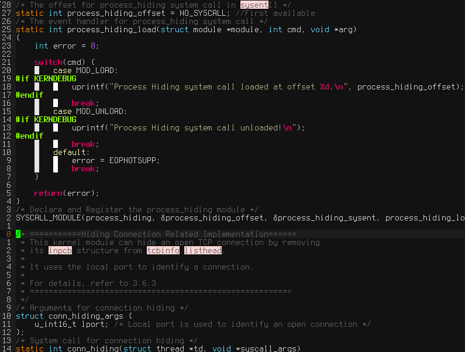
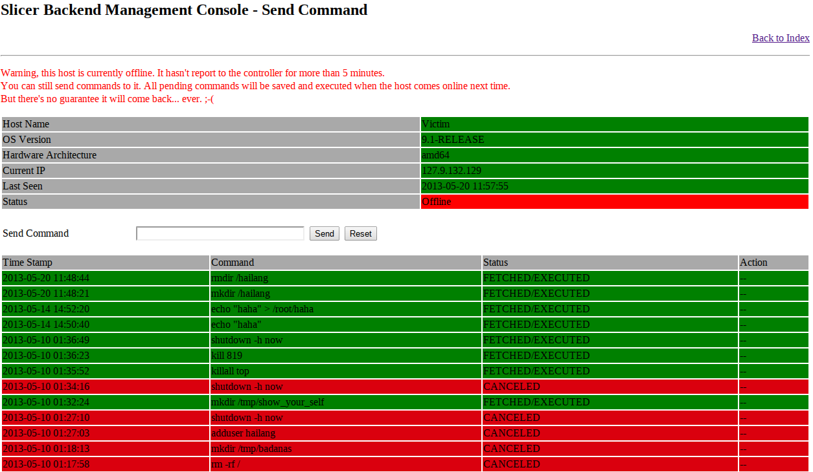
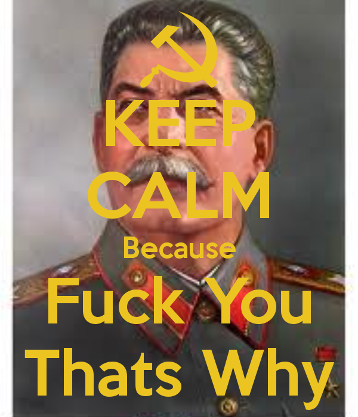
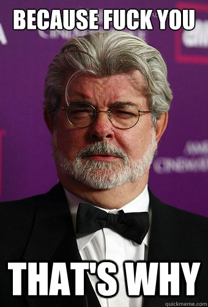
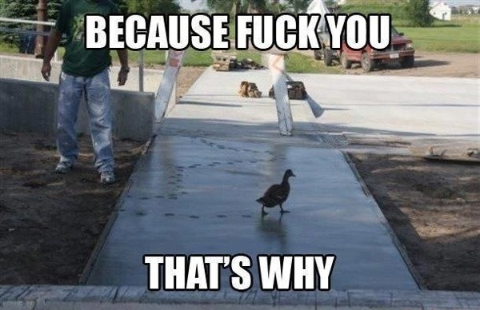

粗略一算寡人已经二十又五了，从08年来这边到现在已经整整五年。三年的本科上完拖了两年的毕业设计，谁要跟我 比拖延症我跟谁急。
看着周围的朋友一个一个毕业回国也是一件很惆怅的事情。你明知道也许有些人此生再也见不到面，却还是完全严肃 不起来。那种回首往事的唏嘘也许只有当完成一件事情若干年后才能体会到。
也许我怕的正是唏嘘后的茫然吧。
一份本来两个星期就能写完的论文，两年来我写写停停，停停写写，却无意中让它见证了也许是我学生生涯中最狗血最 跌宕起伏的一段剧情。
三段感情，两次外逃未遂，一份论文。尘埃落定后我还住在同一间公寓，每天还做着一样的事情，只是现在我一个人， 身边已经没什么人可以一起庆祝了。
我想常人在遇到毕业这样的事情时总得做些总结，感谢感谢亲友什么的。但我现在写不出来总结，也没有什么人去感谢。 我个性执拗，不喜欢按规矩出牌。毕业这样的事情对我来说只是前进路上的一块绊脚石，现在只想把它踢得越远越好。
所以说贱人就是矫情。这么一件小事我也能唏嘘感慨这么半天，一边表达自己对这块绊脚石的不屑，一边又非得给它 架上一堆不着边际的纪念意义。
罢了。
说说我这个毕业设计吧。FreeBSD的内核Rootkit，因为那段时间玩EvE Online很着迷，起了个很风骚的名字5L1C3R(slicer)。 设计阶段本来还分了很多内核模块，什么Protector，Harvester， Commuter什么的。后来嫌麻烦全合到一块去了。
大部分功能都是用Hook实现的，因为写起来简单，当时ktrace抓到什么hook什么，幸好没影响到内核稳定性。比较有挑战 的就是getdirentries那个hook吧，虽然网上有参照，理解起来还是花了一些时间。
简单做了个ICMP包注入用来直接发送命令。为了有所创新搞了个反向HTTP连接，自己感觉应该算是一个小小的首创了吧。 用Redhat的openshift做了个基于Flask的控制台，被控端定时Post主机数据然后得到下一条指令，而用户就可以登陆后台 查看主机状态发送命令什么的。这个主要是基于反向链接下HTTP端口被封的几率不大来设计的，不过用C写HTTP POST确实 有点郁闷，参考了Git上一哥们写的库，顺便帮他加了FreeBSD支持。(http-client-c)
整个系统没什么特别出彩的地方，本来很多想法也都没做，也感觉为了对付FYP没必要做。事实证明我是对的。
论文答辩的时候才突然感觉自己遇到了传说中的极品导师，不同于半途睡着的、啥都不懂的、5分钟就不耐烦的，我这个 Advisor可以说得上是人神共愤了。
不仅连Rootkit的基本概念都不懂，而且我跟他说他还不耐烦不愿意听。我演示系统的时候他就一直在旁边摔笔，然后一脸 戏虐加茫然地问我一堆傻x问题。我其实真感觉他是在想尽一切办法激怒我。
要说他问的问题有多傻x，多了不说，举一个惊天地泣鬼神的例子。我说安装Rootkit的前提是有Root权限，这个算是 基本常识了吧，没听说过那个Rootkit自带溢出自带权限提升的，再说那个也不在我项目的Scope里。结果这哥们把笔 一摔，冷笑着问那你这东西有什么用， 谁会把密码主动给你让你安装？你这个项目没有实用价值啊。
我一整天气得肝疼。
我每演示一个功能他就问我why. Why are you hidding files, why are you hidding connections, why are you hidding processes, what is the point, what is the value?
有那么一刹那我真想说Because fuck you, that's why!
  当然，哥是一个有教养的人，这种话我当然没说出来。一般情况下如果有人对我越无礼粗鲁，我越会加倍对你客气， 但我这个客气是有限度的，当我耐下心来给你解释你的傻插问题而你又不停打断我然后再一边摔笔一边像对待 小学作文一样表现出一副又好气有好笑的戏虐模样时，对不起先生，我记住你了。
回到办公室一问才发现同事们大都以前遭到过他的毒手。据说什么都不懂但为人及其粗鲁，当年我们部门的经理是他 的学生，因为论文的问题竟然跟他闹到Staffordshire了。怪不得他第一次见我就没好气，原来是历史遗留问题。
我还记得当时Mid point我们两去了不同的教室，他以为我迟到我以为他没来，我去学生管理咨询正好撞上他。这哥们 就当着我的面冲学生管理处的员工喊，说什么你们知道我有课，干嘛非安排在今天早上云云。我当天中午还专门跑去 他教室门口等着给他道歉，等了半天结果给我甩了句我忙没时间然后扬长而去。现下一对证发现先生没风度原 来已经远近闻名了。
算了。当个小插曲吧。等段时间看看他能给我多少分，太低的话我也得闹。
就这样吧，我也矫情了，也叙事了，也骂人了。到此为止。
<< EOF